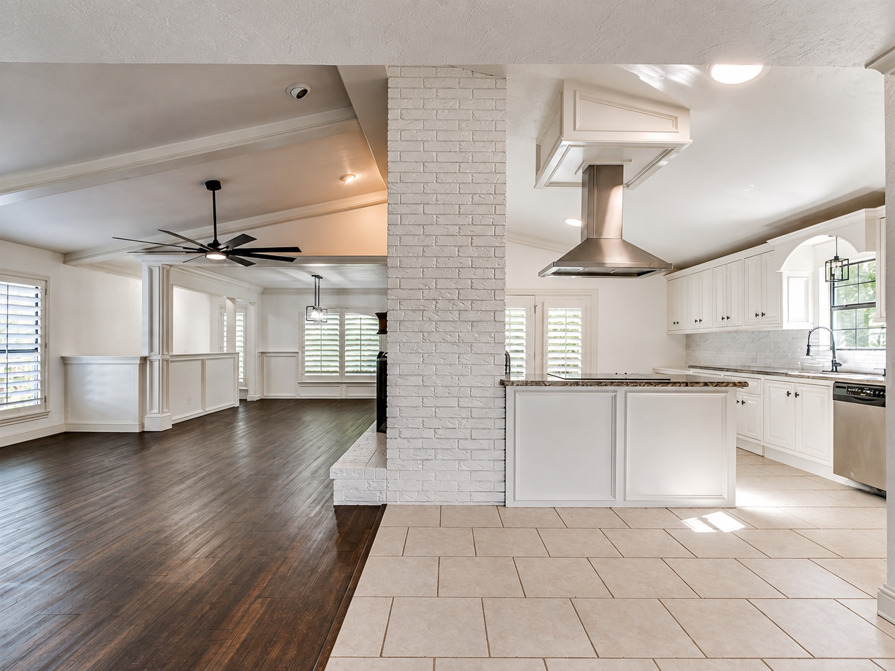

Gaydonne Nusz
REALTOR®
ShowOKC Real Estate
Gaydonne Nusz
REALTOR®
ShowOKC Real Estate
Get in touch
Call, text or email and Gaydonne will get right back to you.

Set on 2.56 quiet acres east of Norman, this 1977 ranch has been remodeled top to bottom into a modern farmhouse. Crisp white board-and-batten siding and painted brick are framed by a timber-trussed cedar entry and a brick front porch, with a circle drive and mature shade trees setting the approach.
Inside, dark wood-look floors, wainscoting, and plantation shutters run throughout. The open kitchen pairs white shaker cabinetry with granite counters, a center island under a stainless vent hood, and a farmhouse sink beneath a picture window. A double-sided fireplace anchors the living room on one side and the formal dining room on the other, and a second dining area sits just off the kitchen.
Both baths have been fully redone: the guest bath with a marble-look walk-in shower, and the primary bath with a dramatic black tile shower, double vanity with barn-door cabinetry, and a walk-in closet with custom built-ins. Out back, a cedar deck looks out over the acreage and mature trees.
| Price | $425,000 |
|---|---|
| Status | Active |
| Property type | Single-family on acreage |
| Year built | 1977, fully remodeled |
| Interior | 2,280 sq ft |
| Lot | 2.56 acres |
| Bedrooms / Baths | 3 / 2 |
| Schools | Norman Public Schools |
| MLS # | 1255446 |
Gaydonne Nusz
REALTOR®
ShowOKC Real Estate
Call, text or email and Gaydonne will get right back to you.